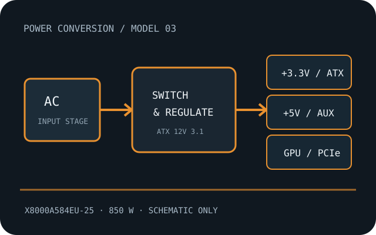

[ ATX DESKTOP POWER // IDENTIFIED MODEL ]
Antec NE850 PLATINUM ATX3.1
Antec’s fully modular 850 W platinum model X8000A584EU-25. It is separate from the earlier NeoECO Gold 850 M catalog record. Specifications below are manufacturer-source references; the physical unit’s nameplate and matching manual control.

HIGH-VOLTAGE SAFETY: Disconnect AC before external inspection. Never open, probe, or repair a PSU internally; hazardous charge can persist after unplugging. Replace a damaged, wet, burnt, modified or unidentified unit, or use qualified service.
Model-specific specifications
| Manufacturer / exact model | Antec NE850 PLATINUM ATX3.1; model / SKU X8000A584EU-25. Match the complete regional suffix, hardware revision and label. |
|---|---|
| Rated capacity | 850 W continuous total output as the manufacturer-rated class; combined rail limits and operating-temperature derating remain model-specific. |
| Efficiency certification | 80 PLUS Platinum, listed by the manufacturer for this named model. Certification does not identify an unknown PSU revision or establish used-unit condition. |
| AC input | 100–240 V AC, 10–5 A, 50–60 Hz. |
| DC rails | +12 V: 70.8 A (850 W); +3.3 V and +5 V rails are present, but Antec’s public product page/flyer does not publish their individual current limits; check the exact unit rating label before loading them. −12 V and +5 VSB limits are likewise label-specific. |
| Connector set | 24-pin ATX; two EPS 4+4-pin; one native 12V-2x6 16-pin; three PCIe 6+2-pin; six SATA; two Molex 4-pin. |
| ATX / PCIe revision | ATX 12V 3.1 / PCIe 5.1; 12V-2x6 generation. |
| Mechanical envelope | 140 × 150 × 86 mm (depth × width × height). Verify mounting holes, fan/grille clearance, cable exit/side-panel clearance and tolerance against the case drawing. |
| Protections | OCP, OVP, UVP, SCP, OPP, OTP, SIP and NLO, as listed by Antec. Protection labels do not guarantee a safe outcome under a fault; use only a healthy, unmodified unit within its documented ratings. |
Compatibility & revision caveats
- Confirm the full suffix/region and the included lead set; never substitute modular cables from Antec’s other PSU families. Verify 12V-2x6 insertion, GPU cable clearance, rail limits and case mounting before use.
- Confirm motherboard 24-pin and EPS count/pinout, GPU cable type, total power, rail limits, chassis dimensions, cooling clearance, region and full model suffix before purchase or installation.
- Modular PSU-side pinouts are not standardized. A cable that physically fits is not evidence of electrical compatibility; use only leads explicitly approved for this exact model/revision.
- ATX, ATX12V and PCIe connector revisions describe interfaces, not quality, safety certification or automatic compatibility with every PC component.
Manufacturer product and manual sources
- Antec NE850 PLATINUM ATX3.1 product pageAntec model page with electrical, protection and form-factor specifications.
- Antec NE850 PLATINUM ATX3.1 product flyer (PDF)Antec’s manufacturer flyer for this product; use it for current connector/output-table details.
When a broad product-family page conflicts with a model-specific manual, label or cable table, the exact unit label and corresponding model documentation take precedence.